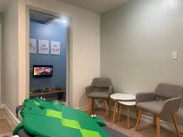

Tiffany Kim
20 yr old College Student attending UCR
My name is Tiffany Kim, and I find profound fascination in the intricate workings of the human brain and nervous system. Currently in my third year at the esteemed University of California, Riverside (UCR), I am pursuing a major in neuroscience. The pursuit of understanding the complexities of the human mind has been a driving force throughout my academic journey.
Originating from Fullerton, located in the vibrant heart of Orange County, California, I have always been drawn to the interconnectedness of science and its applications in improving human health and well-being. Growing up in a community known for its diversity and innovation has greatly influenced my perspectives and aspirations.
UCR has provided me with a nurturing environment where I have been able to delve deep into my passion for neuroscience. From dissecting the neural pathways of model organisms to exploring the latest research in cognitive psychology, my coursework has been both rigorous and rewarding. Beyond the classroom, I have had the privilege of engaging in research projects that have allowed me to apply theoretical knowledge to real-world problems.
While my academic journey has been centered around neuroscience, my ambitions extend beyond the laboratory. I am driven by a desire to make a tangible impact in the field of healthcare. It is with this aspiration in mind that I have set my sights on a career in physical therapy or sports medicine.
The prospect of working directly with individuals to aid in their physical recovery and well-being is immensely fulfilling to me. Whether it's helping athletes regain their mobility after an injury or assisting patients in managing chronic pain, I am drawn to the hands-on nature of these professions. Moreover, the opportunity to blend my understanding of neuroscience with practical rehabilitation techniques excites me, as it allows for a holistic approach to healing.
My journey towards pursuing physical therapy or sports medicine is not only driven by my academic interests but also by my personal experiences. Witnessing the transformative power of rehabilitation firsthand, whether through my own encounters with physical therapy or observing its impact on others, has solidified my commitment to this path.
Looking ahead, I am eager to continue expanding my knowledge and skills through internships, volunteer opportunities, and further academic pursuits. Additionally, I am keen on exploring interdisciplinary approaches that integrate neuroscience with rehabilitation sciences to enhance patient outcomes.
In conclusion, as a third-year neuroscience student at UCR hailing from Fullerton, Orange County, my passion for understanding the complexities of the human brain fuels my ambition to pursue a career in physical therapy or sports medicine. With a blend of academic rigor, practical experience, and personal dedication, I am determined to make meaningful contributions to the health and well-being of individuals in need.
Tiffany Kim, 3rd Year Student With Neuroscience Background
Experience
Intern
• Assisted in the digitalization of paperowk and files, improving office efficiency
• Shadowed the chiropractor throughout patient treatment sessions, gaining valuable insights into Chiropractic care
• Acquired knowledge of physical therapy techniques, enhancing my understanding of musculoskeletal health
Intern
• Assisted in production, stage management, technology, and video-related tasks for the event
• Attended bi-weekly team meetings and facilitated planning for monthly schedule
Education
UC Riverside
Sunny Hills High School
Portfolio
